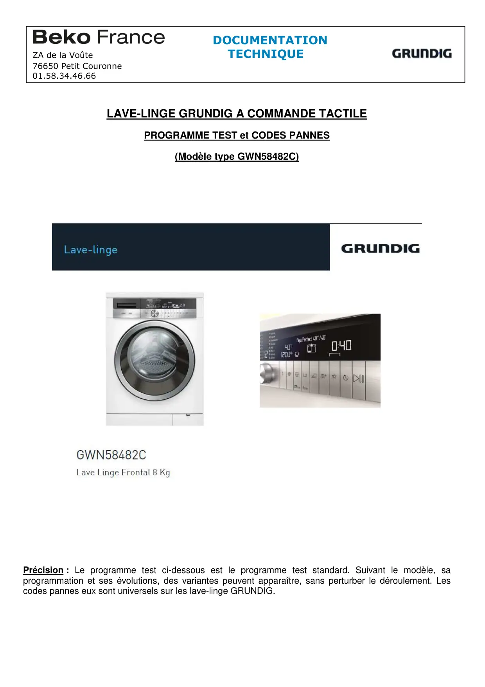
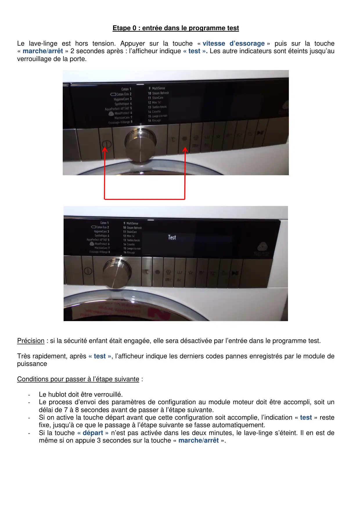
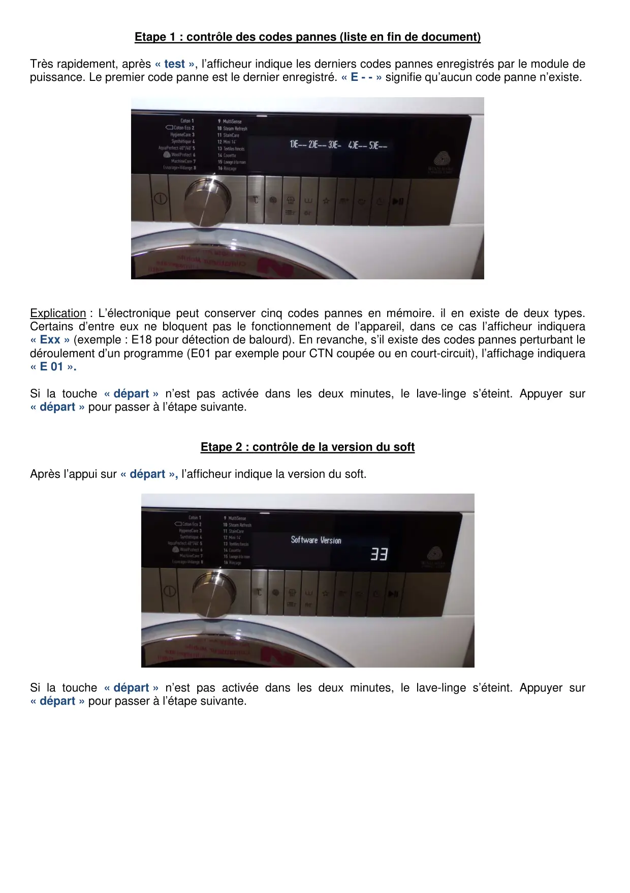
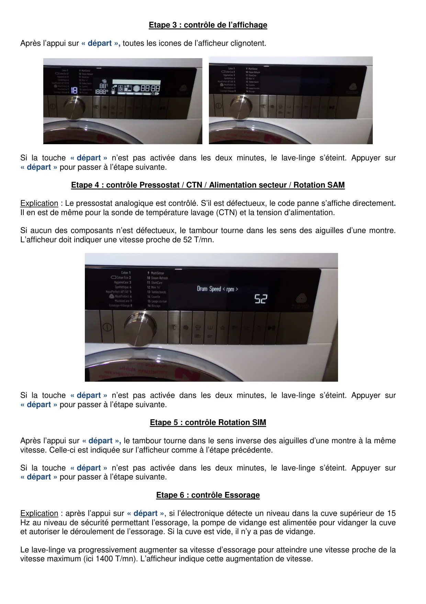
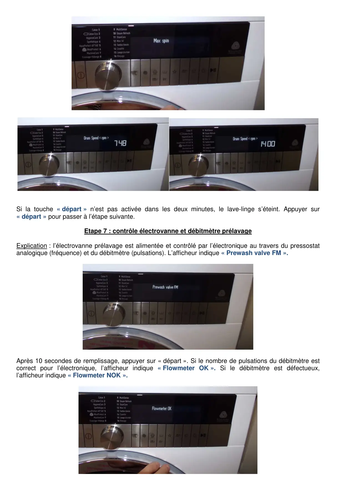
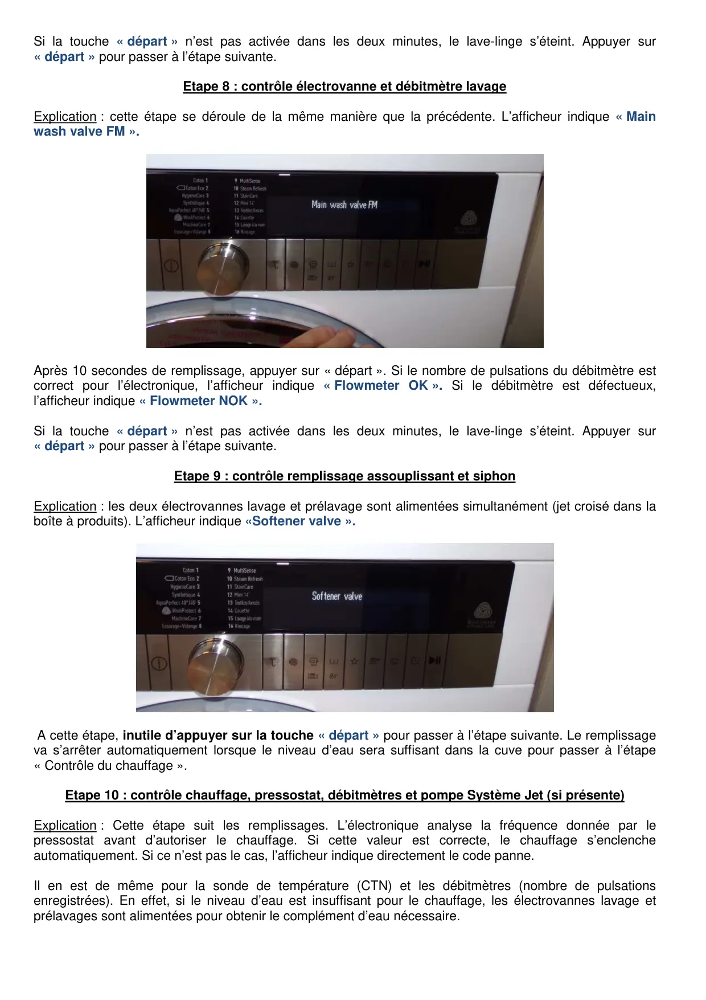
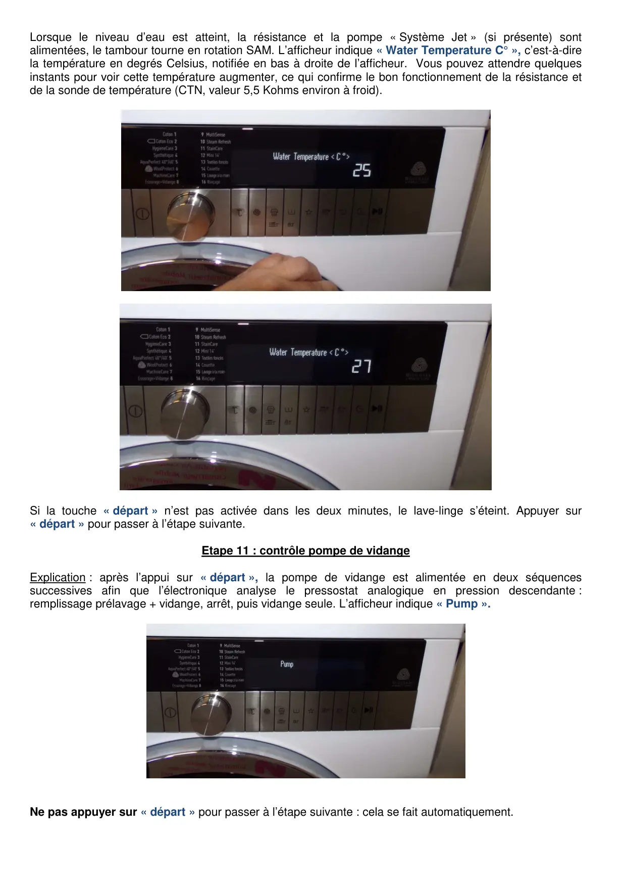
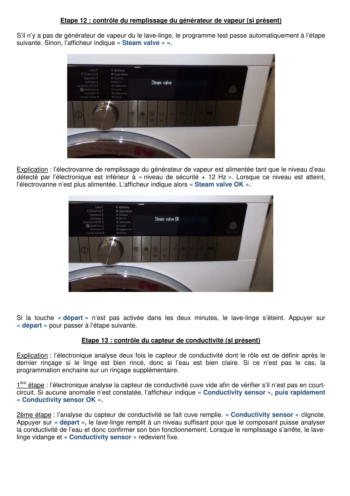
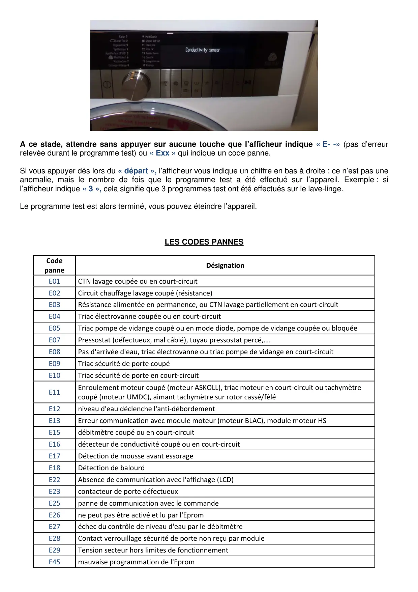
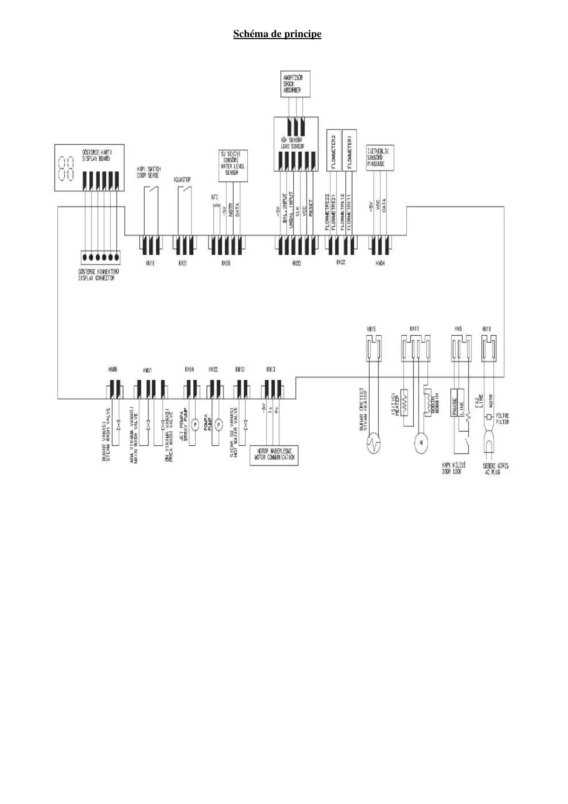

ProgrTest lave linge GRUNDIG

LAVE-LINGE GRUNDIG A COMMANDE TACTILEPROGRAMME TEST et CODES PANNES(Modèle type GWN58482C)Précision : Le programme test ci-dessous est le programme test standard. Suivant le modèle, saprogrammation et ses évolutions, des variantes peuvent apparaître, sans perturber le déroulement. Lescodes pannes eux sont universels sur les lave-linge GRUNDIG.DOCUMENTATIONZA de la Voûte TECHNIQUE76650 Petit Couronne01.58.34.46.66
1 / 10
Etape 0 : entrée dans le programme testLe lave-linge est hors tension. Appuyer sur la touche « vitesse d’essorage » puis sur la touche« marche/arrêt » 2 secondes après : l’afficheur indique « test ». Les autre indicateurs sont éteints jusqu’auverrouillage de la porte.Précision : si la sécurité enfant était engagée, elle sera désactivée par l’entrée dans le programme test.Très rapidement, après « test », l’afficheur indique les derniers codes pannes enregistrés par le module depuissanceConditions pour passer à l’étape suivante :-Le hublot doit être verrouillé.-Le process d’envoi des paramètres de configuration au module moteur doit être accompli, soit undélai de 7 à 8 secondes avant de passer à l’étape suivante.-Si on active la touche départ avant que cette configuration soit accomplie, l’indication « test » restefixe, jusqu’à ce que le passage à l’étape suivante se fasse automatiquement.-Si la touche « départ » n’est pas activée dans les deux minutes, le lave-linge s’éteint. Il en est demême si on appuie 3 secondes sur la touche « marche/arrêt ».
2 / 10
Etape 1 : contrôle des codes pannes (liste en fin de document)Très rapidement, après « test », l’afficheur indique les derniers codes pannes enregistrés par le module depuissance. Le premier code panne est le dernier enregistré. « E - - » signifie qu’aucun code panne n’existe.Explication : L’électronique peut conserver cinq codes pannes en mémoire. il en existe de deux types.Certains d’entre eux ne bloquent pas le fonctionnement de l’appareil, dans ce cas l’afficheur indiquera« Exx » (exemple : E18 pour détection de balourd). En revanche, s’il existe des codes pannes perturbant ledéroulement d’un programme (E01 par exemple pour CTN coupée ou en court-circuit), l’affichage indiquera« E 01 ».Si la touche « départ » n’est pas activée dans les deux minutes, le lave-linge s’éteint. Appuyer sur« départ » pour passer à l’étape suivante.Etape 2 : contrôle de la version du softAprès l’appui sur « départ », l’afficheur indique la version du soft.Si la touche « départ » n’est pas activée dans les deux minutes, le lave-linge s’éteint. Appuyer sur« départ » pour passer à l’étape suivante.
3 / 10
Etape 3 : contrôle de l’affichageAprès l’appui sur « départ », toutes les icones de l’afficheur clignotent.Si la touche « départ » n’est pas activée dans les deux minutes, le lave-linge s’éteint. Appuyer sur« départ » pour passer à l’étape suivante.Etape 4 : contrôle Pressostat / CTN / Alimentation secteur / Rotation SAMExplication : Le pressostat analogique est contrôlé. S’il est défectueux, le code panne s’affiche directement.Il en est de même pour la sonde de température lavage (CTN) et la tension d’alimentation.Si aucun des composants n’est défectueux, le tambour tourne dans les sens des aiguilles d’une montre.L’afficheur doit indiquer une vitesse proche de 52 T/mn.Si la touche « départ » n’est pas activée dans les deux minutes, le lave-linge s’éteint. Appuyer sur« départ » pour passer à l’étape suivante.Etape 5 : contrôle Rotation SIMAprès l’appui sur « départ », le tambour tourne dans le sens inverse des aiguilles d’une montre à la mêmevitesse. Celle-ci est indiquée sur l’afficheur comme à l’étape précédente.Si la touche « départ » n’est pas activée dans les deux minutes, le lave-linge s’éteint. Appuyer sur« départ » pour passer à l’étape suivante.Etape 6 : contrôle EssorageExplication : après l’appui sur « départ », si l’électronique détecte un niveau dans la cuve supérieur de 15Hz au niveau de sécurité permettant l’essorage, la pompe de vidange est alimentée pour vidanger la cuveet autoriser le déroulement de l’essorage. Si la cuve est vide, il n’y a pas de vidange.Le lave-linge va progressivement augmenter sa vitesse d’essorage pour atteindre une vitesse proche de lavitesse maximum (ici 1400 T/mn). L’afficheur indique cette augmentation de vitesse.
4 / 10
Si la touche « départ » n’est pas activée dans les deux minutes, le lave-linge s’éteint. Appuyer sur« départ » pour passer à l’étape suivante.Etape 7 : contrôle électrovanne et débitmètre prélavageExplication : l’électrovanne prélavage est alimentée et contrôlé par l’électronique au travers du pressostatanalogique (fréquence) et du débitmètre (pulsations). L’afficheur indique « Prewash valve FM ».Après 10 secondes de remplissage, appuyer sur « départ ». Si le nombre de pulsations du débitmètre estcorrect pour l’électronique, l’afficheur indique « Flowmeter OK ». Si le débitmètre est défectueux,l’afficheur indique « Flowmeter NOK ».
5 / 10
Si la touche « départ » n’est pas activée dans les deux minutes, le lave-linge s’éteint. Appuyer sur« départ » pour passer à l’étape suivante.Etape 8 : contrôle électrovanne et débitmètre lavageExplication : cette étape se déroule de la même manière que la précédente. L’afficheur indique « Mainwash valve FM ».Après 10 secondes de remplissage, appuyer sur « départ ». Si le nombre de pulsations du débitmètre estcorrect pour l’électronique, l’afficheur indique « Flowmeter OK ». Si le débitmètre est défectueux,l’afficheur indique « Flowmeter NOK ».Si la touche « départ » n’est pas activée dans les deux minutes, le lave-linge s’éteint. Appuyer sur« départ » pour passer à l’étape suivante.Etape 9 : contrôle remplissage assouplissant et siphonExplication : les deux électrovannes lavage et prélavage sont alimentées simultanément (jet croisé dans laboîte à produits). L’afficheur indique «Softener valve ».A cette étape, inutile d’appuyer sur la touche « départ » pour passer à l’étape suivante. Le remplissageva s’arrêter automatiquement lorsque le niveau d’eau sera suffisant dans la cuve pour passer à l’étape« Contrôle du chauffage ».Etape 10 : contrôle chauffage, pressostat, débitmètres et pompe Système Jet (si présente)Explication : Cette étape suit les remplissages. L’électronique analyse la fréquence donnée par lepressostat avant d’autoriser le chauffage. Si cette valeur est correcte, le chauffage s’enclencheautomatiquement. Si ce n’est pas le cas, l’afficheur indique directement le code panne.Il en est de même pour la sonde de température (CTN) et les débitmètres (nombre de pulsationsenregistrées). En effet, si le niveau d’eau est insuffisant pour le chauffage, les électrovannes lavage etprélavages sont alimentées pour obtenir le complément d’eau nécessaire.
6 / 10
Lorsque le niveau d’eau est atteint, la résistance et la pompe « Système Jet » (si présente) sontalimentées, le tambour tourne en rotation SAM. L’afficheur indique « Water Temperature C° », c’est-à-direla température en degrés Celsius, notifiée en bas à droite de l’afficheur. Vous pouvez attendre quelquesinstants pour voir cette température augmenter, ce qui confirme le bon fonctionnement de la résistance etde la sonde de température (CTN, valeur 5,5 Kohms environ à froid).Si la touche « départ » n’est pas activée dans les deux minutes, le lave-linge s’éteint. Appuyer sur« départ » pour passer à l’étape suivante.Etape 11 : contrôle pompe de vidangeExplication : après l’appui sur « départ », la pompe de vidange est alimentée en deux séquencessuccessives afin que l’électronique analyse le pressostat analogique en pression descendante :remplissage prélavage + vidange, arrêt, puis vidange seule. L’afficheur indique « Pump ».Ne pas appuyer sur « départ » pour passer à l’étape suivante : cela se fait automatiquement.
7 / 10
Etape 12 : contrôle du remplissage du générateur de vapeur (si présent)S’il n’y a pas de générateur de vapeur du le lave-linge, le programme test passe automatiquement à l’étapesuivante. Sinon, l’afficheur indique « Steam valve » ».Explication : l’électrovanne de remplissage du générateur de vapeur est alimentée tant que le niveau d’eaudétecté par l’électronique est inférieur à « niveau de sécurité + 12 Hz ». Lorsque ce niveau est atteint,l’électrovanne n’est plus alimentée. L’afficheur indique alors « Steam valve OK ».Si la touche « départ » n’est pas activée dans les deux minutes, le lave-linge s’éteint. Appuyer sur« départ » pour passer à l’étape suivante.Etape 13 : contrôle du capteur de conductivité (si présent)Explication : l’électronique analyse deux fois le capteur de conductivité dont le rôle est de définir après ledernier rinçage si le linge est bien rincé, donc si l’eau est bien claire. Si ce n’est pas le cas, laprogrammation enchaine sur un rinçage supplémentaire.1ère étape : l’électronique analyse la capteur de conductivité cuve vide afin de vérifier s’il n’est pas en court-circuit. Si aucune anomalie n’est constatée, l’afficheur indique « Conductivity sensor », puis rapidement« Conductivity sensor OK ».2ème étape : l’analyse du capteur de conductivité se fait cuve remplie. « Conductivity sensor » clignote.Appuyer sur « départ », le lave-linge remplit à un niveau suffisant pour que le composant puisse analyserla conductivité de l’eau et donc confirmer son bon fonctionnement. Lorsque le remplissage s’arrête, le lave-linge vidange et « Conductivity sensor » redevient fixe.
8 / 10
A ce stade, attendre sans appuyer sur aucune touche que l’afficheur indique « E- -» (pas d’erreurrelevée durant le programme test) ou « Exx » qui indique un code panne.Si vous appuyer dès lors du « départ », l’afficheur vous indique un chiffre en bas à droite : ce n’est pas uneanomalie, mais le nombre de fois que le programme test a été effectué sur l’appareil. Exemple : sil’afficheur indique « 3 », cela signifie que 3 programmes test ont été effectués sur le lave-linge.Le programme test est alors terminé, vous pouvez éteindre l’appareil.LES CODES PANNESCodepanneDésignationE01CTN lavage coupée ou en court-circuitE02Circuit chauffage lavage coupé (résistance)E03Résistance alimentée en permanence, ou CTN lavage partiellement en court-circuitE04Triac électrovanne coupée ou en court-circuitE05Triac pompe de vidange coupé ou en mode diode, pompe de vidange coupée ou bloquéeE07Pressostat (défectueux, mal câblé), tuyau pressostat percé,….E08Pas d'arrivée d'eau, triac électrovanne ou triac pompe de vidange en court-circuitE09Triac sécurité de porte coupéE10Triac sécurité de porte en court-circuitE11Enroulement moteur coupé (moteur ASKOLL), triac moteur en court-circuit ou tachymètrecoupé (moteur UMDC), aimant tachymètre sur rotor cassé/fêléE12niveau d'eau déclenche l'anti-débordementE13Erreur communication avec module moteur (moteur BLAC), module moteur HSE15débitmètre coupé ou en court-circuitE16détecteur de conductivité coupé ou en court-circuitE17Détection de mousse avant essorageE18Détection de balourdE22Absence de communication avec l'affichage (LCD)E23contacteur de porte défectueuxE25panne de communication avec le commandeE26ne peut pas être activé et lu par l'EpromE27échec du contrôle de niveau d'eau par le débitmètreE28Contact verrouillage sécurité de porte non reçu par moduleE29Tension secteur hors limites de fonctionnementE45mauvaise programmation de l'Eprom
9 / 10
Schéma de principe
10 / 10